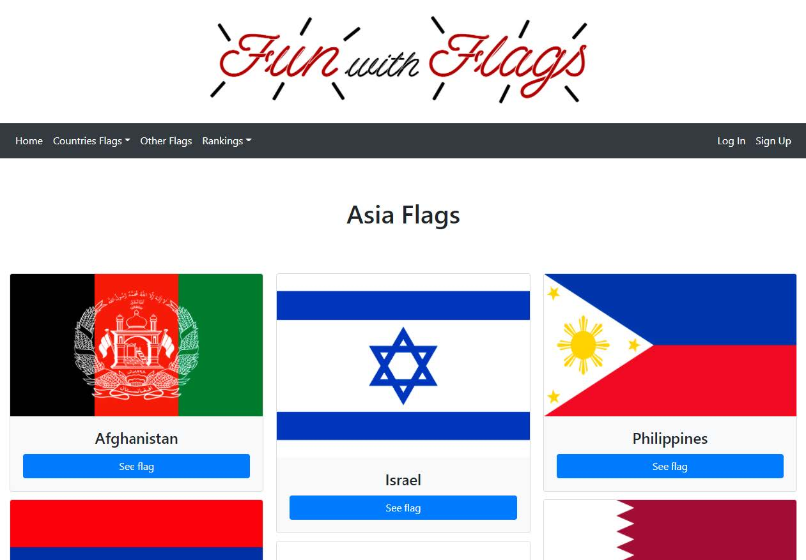
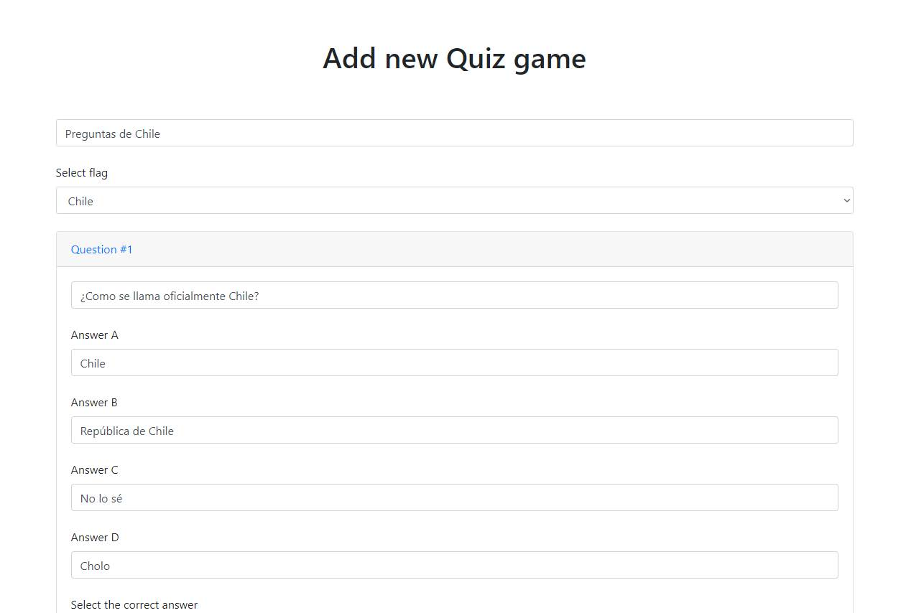
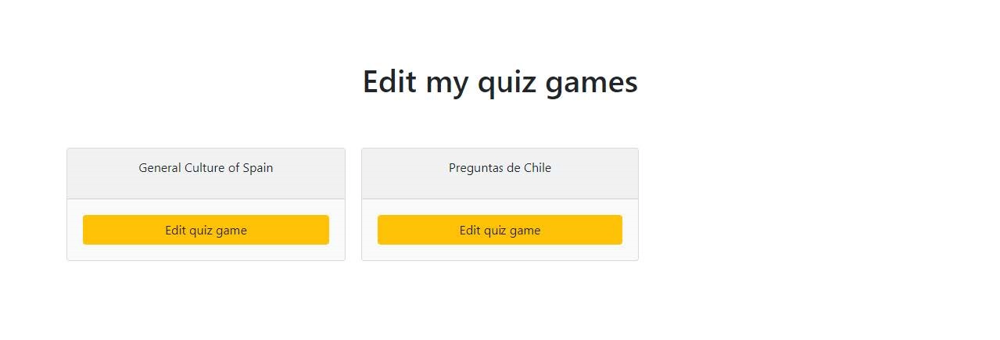
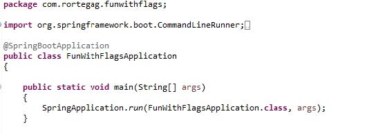
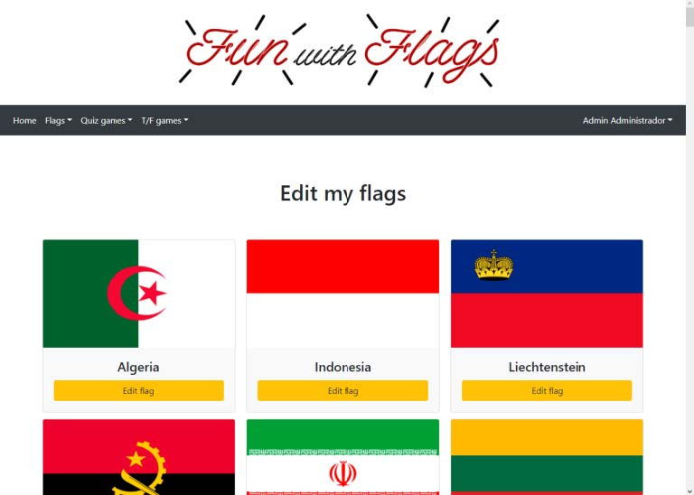
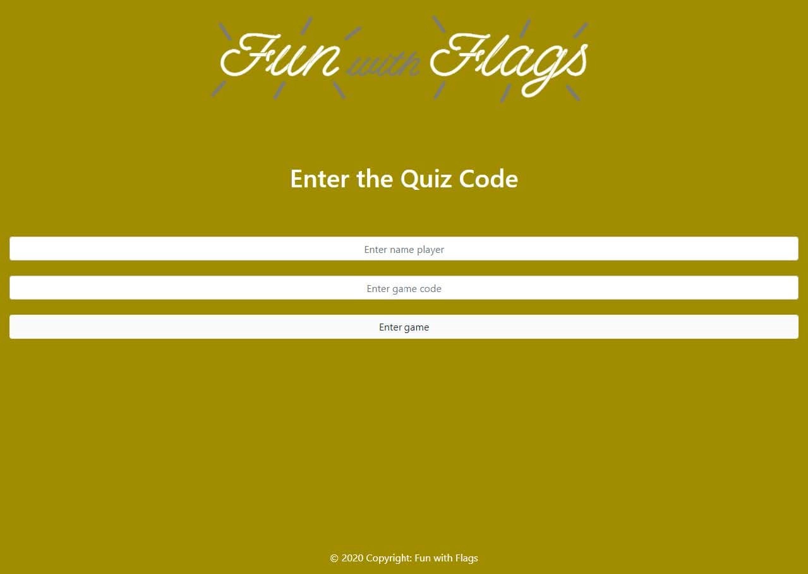
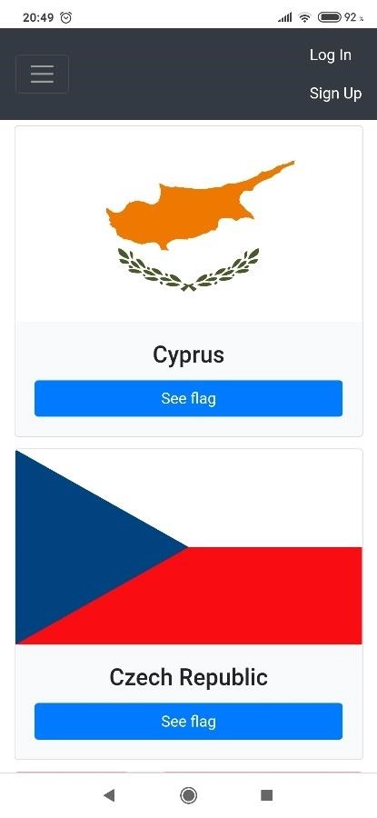

Diversión con banderas
Introducción
Descripción de la aplicación.
Diversión con Banderas es una Aplicación Web hecha en Java con el conocido framework Spring. En la propia aplicación, los usuarios pueden conocer información sobre cada bandera y crear minijuegos como un Quiz, agregar varias preguntas de opción múltiple y preguntas de Verdadero/Falso.
Los usuarios deberán registrarse en la aplicación web si quieren crear sus propias banderas y sus propios minijuegos y tendrá un ranking de competición entre los usuarios del minijuego creado por un usuario. Los usuarios que quieran jugar, no es necesario registro.
El usuario puede crear banderas de cada región, por ejemplo, Asia y poner las banderas de los países de Asia con su información de esa bandera o banderas que no están relacionadas con una región (OTRO), pero está pueda poner banderas que no de países, por ejemplo, las banderas que se usan en carreras de Formula 1.
La arquitectura de la Aplicación Web será la siguiente.

Por la parte del cliente tendrá los lenguajes de HTML5, CSS3 y JavaScript/jQuery (un framework de JavaScript). También habrá ciertas librerías que se usaran en este proyecto, como Bootstrap y SweetAlert
Entre medias, se usará un motor de plantillas llamada Thymeleaf, que es más practico que el tradicional JSP
Por la parte del servidor tendrá las siguientes tecnologías:
- Spring Boot: Con Spring Boot, nos facilita el despliegue de un servidor web (en este caso) y seleccionar que tecnologías queremos usar de Spring Framework. Usa Maven para descargar las dependencias y tenerlas actualizadas.
- Spring Web MVC: El núcleo para la creación de la aplicación web. Se utilizará el patrón MVC (Modelo - Vista - Controlador) para crear software más robusto con un cliclo de vida más adecuado, donde se potencie la facilidad de mantenimiento, reutilización del código y la sepración de conceptos
- Spring Data JPA: Se usará para simplificar la persistencia de los datos usando los estándares de JPA.
- Hibernate: Se deberá usar un ORM y que sea compatible también con el estándar JPA. Hibernate es el más completo y robusto.
- Servidor de base de datos MySQL: todos los datos de la aplicación web se guardarán en una base de datos relacional.
Objetivos y motivación.
Ahora los desarrolladores ya no es que sepan ciertos lenguajes de programación, sino también que frameworks ahí, para que sirven y desarrollar aplicaciones con esos frameworks.
Mis objetivos son:
- Aprender un framework de desarrollo web tanto como frontend (Thymeleaf, CSS, Bootstrap) como backend (Spring Framework).
- Qué se aprende a usar varios módulos del framework de Spring.
- Desarrollar una aplicación web educativa solamente de banderas. La idea del proyecto la tenia en mente hace 1 año.
Análisis
Requisitos funcionales.
El sitio estará dividido en tres partes:
- Inicio del sitio
- Administración del usuario
- Juego
Inicio del sitio
Esta es la página principal. En ella, al darle a logo de Diversión con Banderas, volverá al Inicio. En el menú de navegación, está los siguientes enlaces.
Al lado izquierdo:
- Inicio, es la propia página de inicio.
- Banderas de países
- Banderas de África
- Banderas de Asia
- Banderas de América central
- Banderas de Europa
- Banderas de Norteamérica
- Banderas de Oceanía
- Banderas de Sudamérica
- Otras banderas
- Rankings
- Quiz
- Verdadero o falso
Al lado derecho:
- Iniciar sesión
- Registrarte
Página de banderas de países
Página de banderas de África
Aquí se verán todas las banderas de África
Página de banderas de Asia
Aquí se verán todas las banderas de Asia
Página de banderas de América central
Aquí se verán todas las banderas de América central
Página de banderas de Europa
Aquí se verán todas las banderas de Europa
Página de banderas de Norteamérica
Aquí se verán todas las banderas de Norteamérica
Página de banderas de Oceanía
Aquí se verán todas las banderas de Oceanía
Página de banderas de Sudamérica
Aquí se verán todas las banderas de Sudamérica
Otras banderas
Aquí se verán otras banderas que no tienen región. Se comprueba que si no hay banderas, este indica un mensaje
Al darle a botón de ver una bandera, se visualizará los datos de la bandera, la imagen de la bandera, el nombre de la bandera, su región y su información.
Rankings
Quiz
Aquí se visualiza los quizs, como el nombre del juego y su código
Verdadero/Falso
Aquí se visualiza los juegos de verdadero/falso, como el nombre del juego y su código
Al darle al botón de ver el ranking, se visualizará el ranking de ese juego
Iniciar sesión
En la página de inicio de sesión, se tendrá que poner el email y la contraseña con la que se registró en el sitio. Ahí una casilla de recuérdame para acceso más rápido a la administración de sus banderas y juegos.
Registrarte
En la página del registro, se tendrá que poner el nombre, los apellidos, el email y la contraseña. Al darle al botón de registrarse, se muestra un mensaje de color verde que se registró correctamente o rojo si ha habido un error al registrarse.
Administración del usuario
Esta es la página principal del usuario. En ella, al darle a logo de Diversión con Banderas, volverá a la página principal del usuario. En el menú de navegación, está los siguientes enlaces.
Al lado izquierdo:
- Inicio, es la propia página de inicio del usuario.
- Banderas
- Nueva bandera
- Ver mis banderas
- Editar banderas
- Borrar banderas
- Quizs
- Nuevo quiz
- Ver mis quizs
- Editar quizs
- Borrar quizs
- Verdadero/Falso
- Nuevo Verdadero/Falso
- Ver mis verdadero/falso
- Editar juegos verdadero/falso.
- Borrar juegos verdadero/falso.
Al lado derecho:
- Nombre del usuario
- Cerrar sesión
Inicio
En esta página, se mostrará lo mismo como el menú, pero con interfaz más amigable.


Banderas
Nueva bandera
En esta página se selecciona el archivo de imagen para la bandera, el nombre de la bandera, de que región es y la información de la bandera. Al darle a Guardar bandera se guardará y te regresará a la página principal.
Ver mis banderas
Aquí se podrá visualizar todas las banderas que ha creado el usuario. Al darle a Ver bandera, se visualizará esa bandera, su imagen, el nombre, la región y su información en texto enriquecido.
Editar banderas
Aquí se podrá visualizar las banderas creadas, pero al darle al botón Editar bandera, se mostrará los datos de la bandera seleccionada para editarla y actualizarla.
Si editamos la información de la bandera y pulsamos en el botón Guardar bandera, podemos ver luego que tenemos la bandera actualizada.
Borrar banderas
Aquí se podrá visualizar las banderas y al darle a botón de Borrar bandera, saldrá un mensaje como este.

Si le damos en OK, se borrará la bandera y si había un juego con esta bandera, también será eliminado automáticamente por borrar su bandera.
Juego
Nuevo quiz / verdadero o falso
Al darle en nuevo Quiz/Verdadero o falso, se deberá rellenar el nombre del juego, seleccionar la bandera para ese juego y sus preguntas y sus respuestas y seleccionar la respuesta correcta. El código del juego para luego acceder para jugar se generará automáticamente.
Ver mis quizs
Aquí se podrá visualizar los juegos quizs/verdadero o falso del usuario que ha creado. Si pulsa en el botón Ver quiz/ver verdadero o falso, se visualizará el juego, tanto el nombre del juego, la bandera seleccionada, el código del juego, las preguntas de los juegos y su respuesta correcta.

Editar quizs / verdadero o falso
Aquí se podrá visualizar los juegos quizs del usuario que ha creado. Si pulsa en el botón Editar quiz/verdadero o falso, el usuario podrá editar SOLAMENTE el nombre del juego y la bandera.
Si vemos el quiz editado, vemos que tenemos un nuevo código del juego.
Borrar quizs / verdadero o falso
Aquí se podrá visualizar los juegos quizs/verdadero o falso del usuario que ha creado. Si pulsa en el botón Borrar quiz/Borrar juego verdadero o falso, se mostrará un mensaje de advertencia.
Si pulsamos en borrar, saldrá un mensaje de confirmación si queremos borrar el juego quiz. Si pulsamos en OK, se borrará tanto el juego como sus preguntas y los rankings de los usuarios.
Juego
Entrada del juego
Aquí el usuario deberá poner un nombre del usuario y el código del juego. Si no existe, se refrescarán la ventana. Si existe pasará al juego.
Vista del juego
Aquí el usuario deberá seleccionar en cada pregunta, la respuesta que cree que es correcta. Si el usuario pulsa en Pregunta #2 por ejemplo, se mostrará la pregunta 2 para ser respondida. Una vez respondidas todas las preguntas, el usuario pude darle en el botón Enviar mis respuestas.
Resultado de la puntuación del usuario
Aquí se le mostrará al usuario su puntuación y ver que respuesta es la correcta en cada pregunta.

Más abajo pude ver sus repuestas para comprobar si se ha equivocado o no.
Requisitos no funcionales
- Para el cliente:
- Microsoft Edge
- Google Chrome
- Mozilla Firefox
- Opera
- Brave
- Para el servidor:
- Tener Java 8 instalado.
- Tener instalado y configurado MySQL Server 8.0. Ver apartado de configuración MySQL Server.
- Conexión a internet.
- Dominio DNS en internet para que los clientes puedan conectarse. Ver apartado de configuración de servicio DDNS.
Un navegador web que esté actualizado a su última versión. Recomiendo los siguientes Navegadores web:
El cliente puede conectarse a través de un móvil, tablet u ordenador.
Planificación
Preparación del proyecto.
Descargo Spring Tool Suite 4. Es un eclipse con plugins ya incorporados para Spring.

Una vez descargado, ejecutamos el jar. Este descomprimirá una carpeta que es el IDE o con ello guardarlo donde queramos.
Vemos los archivos descomprimidos.
Podemos usar el propio Spring Tool Suite para agregar las dependencias para proyecto, pero uso Spring Initializr porque viene todas las dependencias. Relleno los datos de como se va a llamar el proyecto.
Si doy en dependencias, veo para seleccionar las dependencias que quiero usar para mi proyecto.
Selecciono todas estas dependencias.
Al darle a Generate, me descargo un proyecto para se importado con Maven. Vemos el pom.xml como ha quedado.
La configuración de archivo de application.properties es importante, ya que aquí podemos configurar muchas cosas. Se configura lo siguiente.
spring.datasource.url: La URL de la conexión de la base de datos
MySQL.
spring.datasource.username: El usuario de la base de datos que se
va a conectarse.
spring.datasource.password: La contraseña del usuario de la base
de datos.
spring.jpa.show-sql-true: Esto sirve para mostrar las sentencias
SQL como debug.
spring.jpa.hibernate.ddl-auto: Esto sirve para generar los DDL. En
Create creará las tablas, pero si se cierra el servicio web y se
vuelve a poner, borrará todo lo que contenía y lo creará de nuevo.
Con update actualizará las tablas si Hibernate ve alguna
configuración nueva de JPA.
spring.jpa.properties.hibernate.jdbc.batch_size: Esto sirve para
almacenar inserción de datos a una tabla como un batch para no
colgar la base de datos. En vez de enviar una petición de
inserción de 5 preguntas, lo meto en un batch y hará la inserción
rápidamente sin cuelgues.
spring.jpa.properties.hibernate.order_inserts: Esto sirve para que
ordene los insert del batch.
spring.thymeleaf.mode: Usamos el modo html ya que las paginas son
en html.
spring.thymeleaf.cache: Deshabilito la cache de Thymeleaf, ya que
puede haber un problema al mostrar las banderas.
spring.servlet.multipart.max-file-size: Indico que lo máximo
permitido del peso del archivo son 10MB.
spring.servlet.multipart.max-request-size: Indico que lo máximos
permitido de peso del archivo son 10MB.
spring.servlet.multipart.max-enabled: Esto se indica para poder
almacenar las imágenes de las banderas
server.port: Establecer el puerto de llamada. Pongo 4848 para
poder salir a internet con el Router de casa.
server.error.whitelabel.enabled: Lo ponemos en false para
deshabilitar el whitelabel por defecto de Spring cuando hay un
error de HTTP.
Estructura de Paquetes
La estructura de paquetes del proyecto de Spring debe de ser la siguiente.
com.rortegag.funwithflags.configuration
.controller
.model
.repository
.service
.util
Paquete principal
En el paquete principal, aparecerá una clase creada, que es la propia aplicación de Spring.
La anotación Spring Boot @SpringBootApplication se usa para marcar una clase de configuración que declara uno o más métodos @Bean y también activa la configuración automática y el escaneo de componentes. Es lo mismo que declarar una clase con las anotaciones @Configuration, @EnableAutoConfiguration y @ComponentScan.
Básicamente, cualquier @Bean que creemos adicionalmente, incluso los de MVC, como @Controller, @Service, @Repository, Spring lo configurará automáticamente sin tener que escribir código adicional en el XML.
Paquete configuration
Archivo WebMVCConfiguration
Esta clase, se configurará que Spring de permisos para poder acceder a los contenidos estáticos de Thymeleaf, ej: las imágenes, los archivos de estilos y los scripts para el cliente.
Abajo se crea un @Bean para la codificación de la contraseña del usuario cuando se registra.
La clase debe de implementar la interfaz WebMvcConfigurer para poder usar el método addResourceHandler.
Archivo SecurityConfiguration
La anotación @Autowired marca un constructor, campo, método de establecimiento o método de configuración para ser conectado automáticamente por las instalaciones de inyección de dependencia de Spring. Esta es una alternativa a la anotación JSR-330 javax.inject.Inject, agregando semántica requerida vs opcional.
Lo ponemos tanto la clase de Codificación de contraseña para usar la clase sin abrir más una instancia de esa clase y el DataSource para verificar que el usuario se autentica en la web.
Se permite acceso sin autenticar todo, menos la parte del acceso a la /home, que será la zona del usuario para crear, ver, modificar y eliminar banderas y juegos.
Paquete controller
En el paquete Controller estará los controladores que serán los encargados de atender peticiones y derivarnos a una vista adecuada. Básicamente el controlador llamará al servicio de los repositorios de cada Modelo establecido con JPA y mostrar el resultado en la página.
Paquete model
En el paquete Model estará los modelos JPA (Clases de configuración de las tablas de la base de datos). Se usan las anotaciones de JPA como @Entity, @Table, @Column, etc.
Paquete repository
En el paquete repository estará los repositorios, que son los encargados de obtener los datos de la base de datos llamando al Hibernate. Ahí tres tipos de repositorio que nos da Spring.
- CrudRepository: Este repositorio nos da unos métodos para usar para hacer un CRUD rápido y sin complicación
- PaginationAndSortingRepository: Este repositorio tiene los mismo que el CrudRepository, pero tiene métodos implementados para la paginación y ordenación
- JpaRepository. Este repositorio es igual que el CRUD, pero usando la lógica JPA, caso que hacemos en este proyecto.
El trabajo de @Repository es detectar excepciones específicas de persistencia y volver a lanzarlas como una de las excepciones unificadas sin marcar de Spring. Básicamente, por ejemplo, si hay un error de base de datos, se mostrará el error al desarrollador, pero la aplicación web seguirá marchando y al cliente le mostrará que hubo un error interno en el servidor.
Se hereda la clase de ese repositorio y podemos implementar algunas interfaces más si queremos, caso que sí, si queremos sacar datos de las banderas dependiendo de la región, por ejemplo.
Paquete service
En el paquete service crearemos las interfaces Java para implementar los métodos que tiene los repositorios. Marcamos beans con @Service para indicar que tiene la lógica empresarial. Entonces, no hay ninguna otra especialidad excepto usarlo en la capa de servicio.
Paquete util
En el paquete util se creará si creamos clases que implemente utilidades, por ejemplo, de este proyecto, algunas constantes que indican las rutas de las páginas y un generador del código del juego.
Implementación del registro de usuarios
La implementación que se hizo primero, es la persistencia de datos del usuario cuando se registre el usuario y cuando se logué, guardar el token de sesión que se borrará automáticamente cuando pase un determinado tiempo.
Lo primero fue crear las clases User y PersistentLogins (esta clase sirve para crear automáticamente la tabla en la base datos). También crear su repositorio (UserRepository) y el servicio (UserService). Se crea el controlador (UserController) para las URL /signup, /login y /home. En la zona de resources, en la carpeta templates, se crea la página principal (index.html), la carpeta user con los archivos signup.html para el registro y el login.html para el inicio de sesión. También se crea la carpeta home y dentro de ella el archivo home.html
index.html

signup.html

login.html
home.html
Implementación del CRUD de las banderas
El usuario debe haber iniciado sesión para crear, ver modificar y borrar sus propias banderas. Lo primero fue crear la clase modelo Flag en el paquete model. Después crear su propio repositorio (FlagRepository) y su servicio (FlagService). Se crea el controlador (FlagController) para las URL /home/add_flag, /home/view_flags, etc. e implementar el CRUD. En la zona de resources, en la carpeta templates home, creo una carpeta llamada flags para crear los siguientes archivos html.
add_flag.html
view_listflags.html
view_flag.html
edit_listflags.html
edit_flag.html
delete_listflags.html
En las páginas add_flag y edit_flag se usa una librería javascript llamada Summernote para que el textarea para poner la información, sea en texto enriquezido. En la página delete_listflags se usa una librería javascript llamada SweetAlert para mostrar un mensaje de confirmación para borrar la bandera.
Implementación del CRUD de los juegos Quiz
El usuario debe haber iniciado sesión para crear, ver modificar y borrar sus propios juegos. Lo primero fue crear las clases QuizGame, QuizQuestion(las preguntas del juego) en el paquete model. Después crear sus propios repositorios (QuizGameRepository) y su servicio (QuizGameService). Se crea el controlador (QuizGameController) para las URL /home/add_quizgame, /home/view_quizgames/, etc y la implementación del CRUD. En la zona de resources, en la carpeta templates home games, creo una carpeta llamada quiz para crear los siguientes archivos html.
add_quizgame.html
view_listquizgames.html
view_quizgame.html
edit_listquizgames.html
edit_quizgame.html
delete_listquizgames.html
En la página delete_listquizgames.html se usa la librería de JavaScript llamada SweetAlert para mostrar un mensaje de confirmación al borrar el juego.
Implementación del CRUD de los juegos Verdadero/Falso
No se va a detallar mucho, que es básicamente casi igual que los juegos de Quiz, pero diferenciando que en vez de que hay 4 respuestas, hay dos, verdadero o falso. Lo primero fue crear las clases TrueFalseGame, TrueFalseQuestion(las preguntas del juego) en el paquete model. Después crear sus propios repositorios (TrueFalseGameRepository) y su servicio (TrueFalseGameService). Se crea el controlador (TrueFalseController) para las URL /home/add_tfgame, /home/view_tfgames, etc y la implementación de su CRUD. En la zona de resources, en la carpeta templates home games, creo una carpeta llamada truefalse para crear los archivos html.
Implementación del almacenamiento de imágenes
En el paquete service, se crea otra llamada storage para implementar las siguientes clases para poder almacenar las imágenes de las banderas. Se ha seguido un tutorial propio de Spring para su desarrollo. https://spring.io/guides/gs/uploading-files/
En el propio código de las clases están documentadas para mayor entendimiento en vez de este documento.
Una vez implementado, en la base de datos, en la tabla flags, estará la URL de la bandera.

Implementación del juego
Lo primero fue crear las clases RankingQuizGame y RankingTrueFalseGame el paquete model. Después crear sus propios repositorios (RankingQuizGameRepository y RankingTrueFalseGameRepository) y su servicio (RankingQuizGameService y RankingTrueFalseGameService). Se crea el controlador (GameController) para poner el código del juego, el juego en sí y el resultado final del juego para el usuario. En la zona de resources, en la carpeta templates, creo una carpeta llamada game para crear los siguientes archivos html.
enter_quizgame.html
quizgame.html
results_quizgame.html
enter_truefalsegame.html
truefalsegame.html
results_truefalsegame.html
Implementación de mostrar los rankings de los juegos, mostrar las banderas por regiones y páginas de información de la aplicación.
Se crea el controlador (RankingGamesController) para mostrar la lista de los juegos y al pulsar en un de ello mostrar el ranking de ese juego. En la zona de resources, en la carpeta templates, creo una carpeta llamada rankings para crear los siguientes archivos html.
view_quizgames.html
view_rankingquizgame.html
view_truefalsegame.html
view_rankingtruefalsegame.html
Implementación de mostrar errores HTTP personalizados
En el paquete controller, se crea otro paquete llamado error. Este contendrá un controlador para errores http. Se implementa la clase ErrorController. Al implementarlo, los errores HTTP serán personalizados.
Diseño
Diseño de la base datos
Pruebas
Se prueba la aplicación web en vista ordenador y la vista en móvil, para comprobar que se vea bien en diferentes pantallas y tenga buena comunicación.
Vista ordenador
Vista móvil
Conclusiones
Desarrollar en Spring es un trabajo grande si no tienes experiencia, porque, en un framework de Java muy grande, pero es muy divertido aprender como con solo las anotaciones de Spring, te ahorría horas y horas de trabajo. Cuando te vas soltando, ya sabes cómo desarrollar, por ejemplo, un CRUD sencillo con relaciones de tablas.
Ahí cosas que tengo que pulir, sobre todo tener más conocimientos con Thymeleaf para la integración con JavaScript, ya que me hubiese gustado editar las preguntas cuando estas editando el juego, pero necesitaría más tiempo.
El juego me hubiese gustado que sea con el WebSocket de Spring, pero tengo poca información con lo que hacer, solamente tengo como hacer un chat sencillo. Quiero que el juego sea como Kahoot, que cuando un usuario se conecte a un juego, aparezcan los demás usuarios en tiempo real y que el usuario que ha iniciado el juego, lo inicie y salgan las preguntas en uno en uno.
Aunque Spring esté desarrollado para aplicaciones empresariales, pero que se puede crear una aplicación web interactiva y educativa sobre él, de momento con este proyecto me voy contento, pero con ganas de seguir aprendiendo otros módulos de Spring.